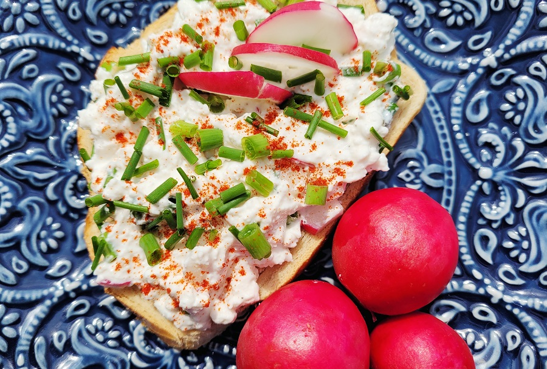

|
Poland |
Starter |
|
Farmer’s Cheese Toast |
|

Description
This recipe is a quick and healthy starter idea. Farmer's cheese open-faced sandwiches are very popular in Poland during spring and summer.
Ingredients
|
Farmer’s Cheese |
0.2 lb |
|
Sour cream |
3 tbsp |
|
Medium radishes |
4 |
|
Chives or green onions |
3 tbsp |
|
Paprika |
1 |
|
Salt and pepper |
Method
1. Chop radishes and chives/ green onions finely.
2. Mix farmer's cheese with greek yogurt/sour cream, chopped radishes, and chives until well combined. If you want the cheese to be creamier then add more greek yogurt/ sour cream.
3. Add salt and pepper to taste and mix well.
4. Sprinkle with paprika and decorate with sliced radish, and chives.
5. Serve over fresh or toasted bread.